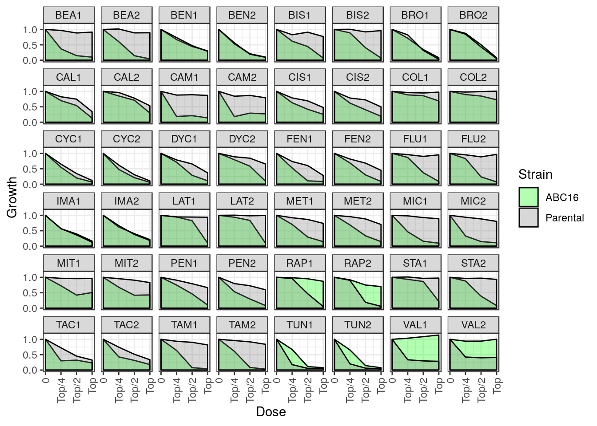
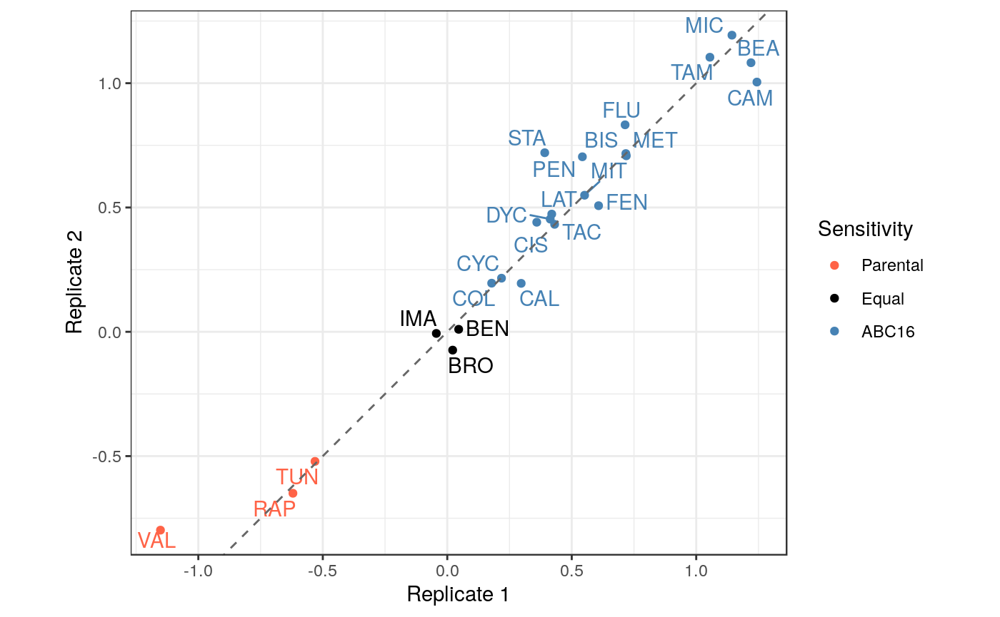
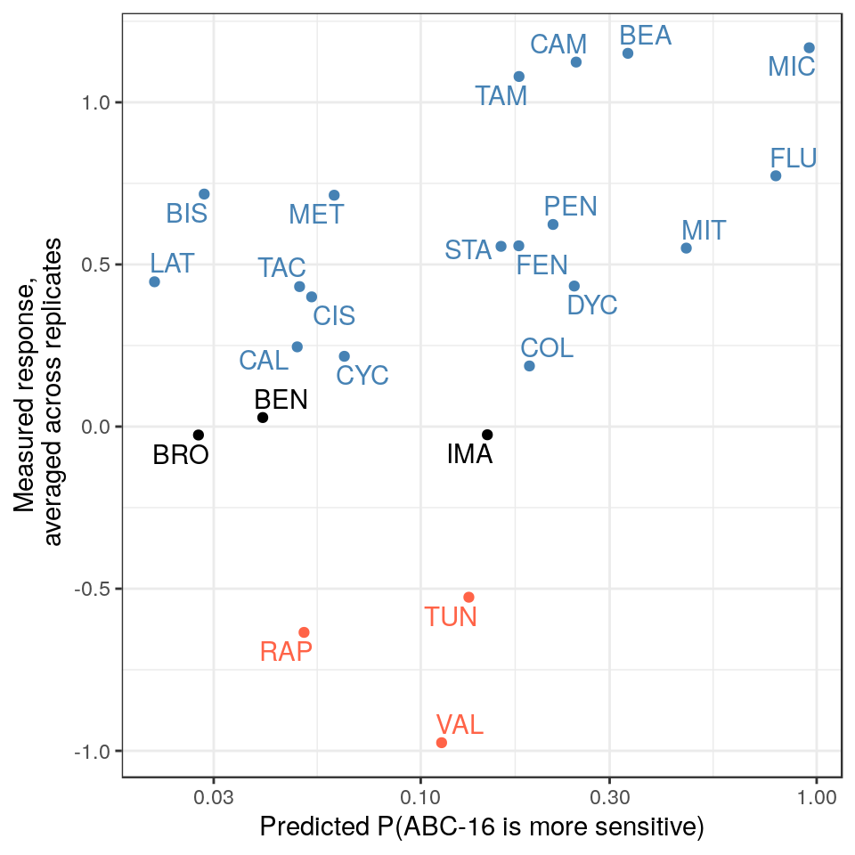

As with the previous vignettes, we begin by loading the relevant libraries and data.
The package provides convenient functions to train a single GBM model on the entire training set, and then apply that model to score new samples. We use this functionality to make predictions on our test data. The training and test sets are part of the same data frame MACCSbinary, where the distinction between the two is given by the Label column: test samples have NA in this column. The helper functions, which are named ABCtrain() and ABCpredict(), recognize this convention and limit the provided data frame to the corresponding rows. Thus, all we have to do is apply both functions to MACCSbinary:
m <- ABCtrain( MACCSbinary ) # Will use rows of MACCSbinary where Label is not-NA
P <- ABCpredict( m, MACCSbinary ) # Will use rows of MACCSbinary where Label is NANote that ABCpredict() drops the Label column, because it contains NA values for test samples and, thererfore, carries no information. The predictions are instead stored in a new ABCpred column. We can examine them directly by selecting the appropriate columns from the output.
colnames(P) %>% head
P %>% select( ABCpred, Drug, pubchem_id )| ABCpred | Drug | pubchem_id |
|---|---|---|
| 0.3336071 | Beauvericin | 3007984 |
| 0.0399048 | Benomyl | 28780 |
| 0.0283885 | Bisantrene | 5351322 |
| 0.0274539 | Bromopyruvate | 70684 |
| 0.0487629 | Calyculin A | 5311365 |
| 0.2469249 | Camptothecin | 24360 |
| 0.0530215 | Cisplatin | 441203 |
| 0.1881744 | Colchicine | 6167 |
| 0.0641300 | Cycloheximide | 6197 |
| 0.2442043 | Dyclonine | 3180 |
| 0.1768879 | Fenpropimorph | 93365 |
| 0.7887600 | Fluconazole | 3365 |
| 0.1473230 | Imatinib | 5291 |
| 0.0212638 | Latrunculin B | 3892 |
| 0.0604480 | Methotrexate | 4112 |
| 0.9578105 | Miconazole | 4189 |
| 0.4685228 | Mitoxantrone | 4212 |
| 0.2158389 | Pentamidine | 4735 |
| 0.0507315 | Rapamycin | 5284616 |
| 0.1595335 | Staurosporine | 44259 |
| 0.0494319 | Tacrolimus | 445643 |
| 0.1771366 | Tamoxifen | 2733526 |
| 0.1322911 | Tunicamycin | 6433557 |
| 0.1129077 | Valinomycin | 441139 |
Now that we made predictions for test samples, we need ground truth to evaluate those predictions against. To that end, we collected dose response data for ABC16 and Parental yeast strains across four doses for all 24 test compounds. Each experiment was repeated in duplicate.
The raw dose response validation data can be loaded directly from this package. Let’s load and examine the first few entries.
## Drug pubchem_id Abbrev Replicate Dose ABC16 Parental
## 1 Beauvericin 3007984 BEA 1 0 1.0000000 1.0000000
## 2 Beauvericin 3007984 BEA 1 Top/4 0.3689786 0.9675383
## 3 Beauvericin 3007984 BEA 1 Top/2 0.1479589 0.8854351
## 4 Beauvericin 3007984 BEA 1 Top 0.0999338 0.9135777
## 5 Beauvericin 3007984 BEA 2 0 1.0000000 1.0000000
## 6 Beauvericin 3007984 BEA 2 Top/4 0.6023782 1.0142114Each row corresponds to a single drug / replicate / dose tuple. The last two columns contain growth values that have been normalized to the DMSO controls. We can plot this data directly for visualization (see Figure 4a in the paper).
## Define order of labels for the "Dose" axis
doseLbl <- c("0","Top/4","Top/2","Top")
## Prepare the data for plotting
V <- ABCvaldata %>% gather( Strain, Growth, ABC16, Parental ) %>%
mutate( Dose = match(Dose, doseLbl), DrugRep = str_c(Abbrev, Replicate) )
## Plot dose response curves
ggplot( V, aes(x=Dose, y=Growth, fill=Strain) ) +
geom_area( alpha = 0.3, color="black", position="identity" ) +
scale_fill_manual( values = c("ABC16"="green", "Parental"="gray50") ) +
scale_x_continuous( breaks = 1:4, labels = doseLbl ) +
scale_y_continuous( breaks = c(0,0.5,1) ) +
facet_wrap( ~DrugRep, nrow=6, ncol=8 ) + theme_bw() +
theme( axis.text.x = element_text(angle=90, vjust=0.5, hjust=1),
strip.text.x = element_text(margin = margin(0.1,0,0.1,0,"cm")) )
We may also be interested in concordance of the two duplicates. Let overall drug response be the area under the dose response curve. Because the growth values have been normalized to DMSO, we approximate this area by simply summing the growth values across all four doses. We then compute the log-fold change in drug response between ABC16 and Parental strains, placing us in a position to directly compare the two replicates for each drug.
## Define the color palette
pal <- c( "Parental"="tomato", "Equal"="black", "ABC16"="steelblue" )
## Compute the overall response as the sum across dose-specific values
S <- ABCvaldata %>% group_by( Drug, Abbrev, Replicate ) %>%
summarize_at( vars(ABC16, Parental), sum ) %>%
mutate( Value = -log2(ABC16 / Parental) ) %>% ungroup %>%
select( -ABC16, -Parental ) %>% spread( Replicate, Value ) %>%
mutate( Sensitivity = cut(`1`, c(-Inf, -0.1,0.1, Inf), labels=names(pal)) )
## Create a scatter plot that directly compares the two replicates
ggplot( S, aes(x=`1`,y=`2`, color=Sensitivity) ) +
geom_point() + theme_bw() + coord_fixed() +
scale_color_manual( values=pal ) +
ggrepel::geom_text_repel( aes(label = Abbrev), show.legend=FALSE ) +
geom_abline( slope = 1, linetype = "dashed", color = "gray40" ) +
xlab( "Replicate 1" ) + ylab( "Replicate 2" )
The plot shows a strong concordance between the two replicates. We can also quantify this observation by explicitly performing the correlation test.
##
## Pearson's product-moment correlation
##
## data: 1 and 2
## t = 20.659, df = 22, p-value = 6.759e-16
## alternative hypothesis: true correlation is not equal to 0
## 95 percent confidence interval:
## 0.9425843 0.9893738
## sample estimates:
## cor
## 0.9751822To evaluate predictions from our model, we first use the drug names to match up the predictions (column ABCpred from P) against the experimental dose response summary S. The overall measured response is then computed by averaging across the two replicates.
## Match up predictions and experimental data
M <- P %>% select( ABCpred, Drug ) %>% inner_join(S, by="Drug") %>%
mutate( Response = map2_dbl( `1`, `2`, ~mean(c(.x,.y)) ) )
## Plot the correspondence between the two
## Include a loess fit to the data points
ggplot( M, aes(x=ABCpred, y=Response, color=Sensitivity) ) + theme_bw() +
geom_point() + xlab("Predicted P(ABC-16 is more sensitive)") +
ylab( "Measured response,\n averaged across replicates" ) +
ggrepel::geom_text_repel( aes(label = Abbrev) ) +
scale_x_log10() + scale_color_manual( values=pal, guide=FALSE )
While the fit doesn’t look particularly compelling, the correlation between predicted and measured values is nevertheless significant. We can compute the Spearman’s rho and the associated p value between the two.
## Apply correlation test to columns ABCpred and Response in M
with( M, cor.test(ABCpred, Response, method="spearman") )##
## Spearman's rank correlation rho
##
## data: ABCpred and Response
## S = 1066, p-value = 0.007682
## alternative hypothesis: true rho is not equal to 0
## sample estimates:
## rho
## 0.5365217SECTION UNDER DEVELOPMENT. Here we will present the scripts that allow users to convert a SMILES representation of their drug to the binary MACCS features, which can then be directly provided to ABCpredict() to infer sensitivity.